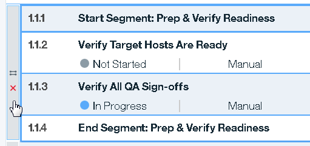

Managing task groups
You can combine two or more tasks into a task group. When you create a group, you define the whether the group task are executed sequentially or in parallel.
You can recognize task groups in the list of task, there is a bar connects the grouped tasks and contains an icon to identify if it is a parallel or sequential group.
- parallel
- sequential

The following image shows a parallel group. 
You can manage task groups in several ways:
- To move a group, select the group select bar or click anywhere on the group, and then drag it to a new location.
- To copy a group, select the group and click Copy , and then place the cursor where you want to insert the copied group and click Paste .
- To cut a group, select the group and click Cut .
- To ungroup a group, select the group and click the Ungroup icon on the group select bar.
- To delete the tasks in a group, select the group and click Delete . The tasks are removed from the deployment plan.
Parent topic: Tasks